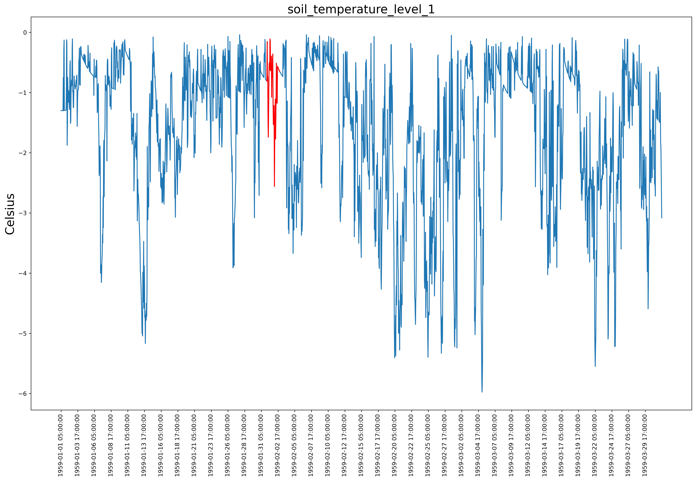

The Dyatlov Pass incident was an event in which nine Russian hikers died in the northern Ural Mountains between
1 and 2 February 1959, in uncertain circumstances. Here, we take a look at the weather conditions surrounding the event. The following images
show the values of different meteorological variables, averaged over a grid cell with centerpoint at latitude 61.75 and longitude 59.5 (approximately 3km from the site of the tent) and size of approximately 13*26km.
. The left image shows data from january to the end of march and right image at 1-2 February 1959. The time step is one hour for both columns.
The red color on the left image signifies 1-2 February.
We have used the data from ERA5 hourly data on single levels from 1950 to 1978 (preliminary version), which is open to
everyone: https://cds.climate.copernicus.eu/cdsapp#!/dataset/reanalysis-era5-single-levels-preliminary-back-extension?tab=overview.
The resolution of this data is 0.25 degrees. I am yet to find data from closest synoptic station from this time period, in order
to compare the measured data with reanalysis data and assess how accurate the following images really are. I can add more single and pressure level variables later.
This parameter is the maximum wind gust at the specified time, at a height of ten metres above the surface of the Earth. The WMO defines a wind gust as the maximum of the wind averaged over 3 second intervals. This duration is shorter than a model time step, and so the ECMWF Integrated Forecasting System (IFS) deduces the magnitude of a gust within each time step from the time-step-averaged surface stress, surface friction, wind shear and stability. Care should be taken when comparing model parameters with observations, because observations are often local to a particular point in space and time, rather than representing averages over a model grid box.
This is the meteorological wind direction, which is explained on this image (subscription "met").
This parameter is the accumulated snow that falls to the Earth's surface, which is generated by the convection scheme in the ECMWF Integrated Forecasting System (IFS). The convection scheme represents convection at spatial scales smaller than the grid box. Snowfall can also be generated by the cloud scheme in the IFS, which represents the formation and dissipation of clouds and large-scale precipitation due to changes in atmospheric quantities (such as pressure, temperature and moisture) predicted directly at spatial scales of the grid box or larger. In the IFS, precipitation is comprised of rain and snow. This parameter is accumulated over a particular time period which depends on the data extracted. For the reanalysis, the accumulation period is over the 1 hour up to the validity date and time. For the ensemble members, ensemble mean and ensemble spread, the accumulation period is over the 3 hours up to the validity date and time. The units of this parameter are depth in metres of water equivalent. It is the depth the water would have if it were spread evenly over the grid box. Care should be taken when comparing model parameters with observations, because observations are often local to a particular point in space and time, rather than representing averages over a model grid box.
This parameter is the accumulated snow that falls to the Earth's surface, which is generated by the cloud scheme in the ECMWF Integrated Forecasting System (IFS). The cloud scheme represents the formation and dissipation of clouds and large-scale precipitation due to changes in atmospheric quantities (such as pressure, temperature and moisture) predicted directly at spatial scales of the grid box or larger. Snowfall can also be generated by the convection scheme in the IFS, which represents convection at spatial scales smaller than the grid box. In the IFS, precipitation is comprised of rain and snow. This parameter is accumulated over a particular time period which depends on the data extracted. For the reanalysis, the accumulation period is over the 1 hour up to the validity date and time. For the ensemble members, ensemble mean and ensemble spread, the accumulation period is over the 3 hours up to the validity date and time. The units of this parameter are depth in metres of water equivalent. It is the depth the water would have if it were spread evenly over the grid box. Care should be taken when comparing model parameters with observations, because observations are often local to a particular point in space and time, rather than representing averages over a model grid box.
This parameter gives the temperature of the snow layer from the ground to the snow-air interface.
This parameter is the amount of snow from the snow-covered area of a grid box. Its units are metres of water equivalent, so it is the depth the water would have if the snow melted and was spread evenly over the whole grid box. The ECMWF Integrated Forecasting System (IFS) represents snow as a single additional layer over the uppermost soil level. The snow may cover all or part of the grid box.
This parameter is the mass of snow per cubic metre in the snow layer.
This parameter is the accumulated liquid and frozen water, comprising rain and snow, that falls to the Earth's surface. It is the sum of large-scale precipitation and convective precipitation.
This parameter is the temperature of the soil at level 1 (in the middle of layer 1). The ECMWF Integrated Forecasting System (IFS) has a four-layer representation of soil, where the surface is at 0cm: Layer 1: 0 - 7cm Layer 2: 7 - 28cm Layer 3: 28 - 100cm Layer 4: 100 - 289cm. Soil temperature is set at the middle of each layer, and heat transfer is calculated at the interfaces between them.